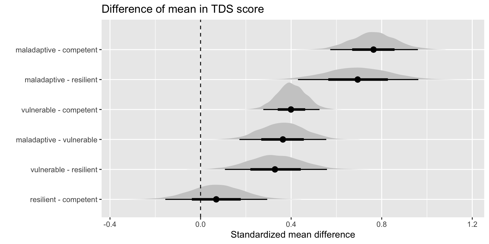

Projects
Phil in the Blank
Posts
Poems
Projects
Notes
About

Predicting mental health and substance use in adulthood from resilience in adolescence
Bayes. Mediation. Ordinal regression. Lots of data.
In this project I explore whether resilience in adolescence is predictive of various outcomes in…
Dec 19, 2022
Philip Nguyen
Exploring Mental Health Networks
This is a brief project where I look at mental health symptom networks in a large sample of youth…
Dec 28, 2021
Bayesian PCA
Exploring Bayesian PCA on two datasets.
Dec 27, 2021
Character Space & TV Tropes
More TV Tropes.
May 5, 2021
Spotify Top 100 Songs Analysis
A quick analysis of how my music listening has changed on Spotify.
Dec 19, 2020
Data Science I Final Project: TV Tropes
Web scraping, TV Tropes, network analysis.
Dec 11, 2020
Life After: A #NET-COVID Survey of Beliefs
The Life After project is a survey of beliefs about what people believe the world will look like…
Apr 27, 2020
Prematurity, Mental Health, and Cognition
This is a project examining the effect of premature birth on mental health and neurocognition in a…
Jul 31, 2019
Intro to R Workshop
These are some slides for an introductory R and Tidyverse workshop I lead for undergraduates and…
Jul 10, 2019
Cognition and BOLD Signal Related to Early Stages of Puberty
This is the project I presented at the OHBM 2019 conference in Rome.
Jun 25, 2019
ABCD Brain Analysis Tool
This is the abstract I submitted to OHBM 2020 for the ABCD Brain Analysis Tool.
Jun 5, 2019
ABCD Data Dictionary
A searchable data dictionary and ABCD release notes all in one place.
Jun 5, 2019
ABCD Database Builder
This is an app I built in Shiny to help ABCD Researchers download ABCD datasets.
Jan 5, 2019
No matching items